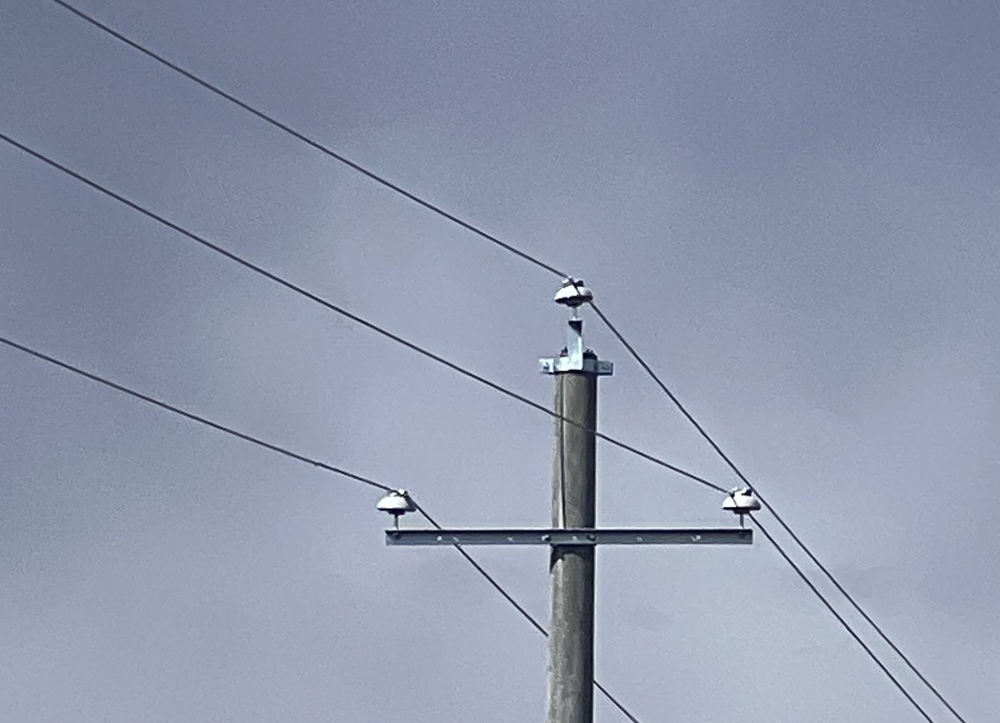
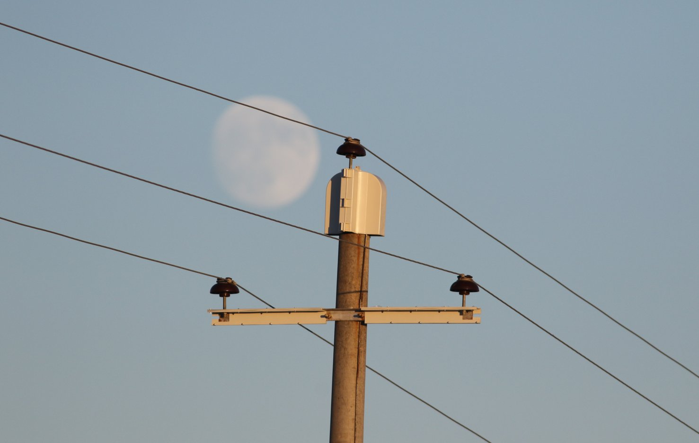
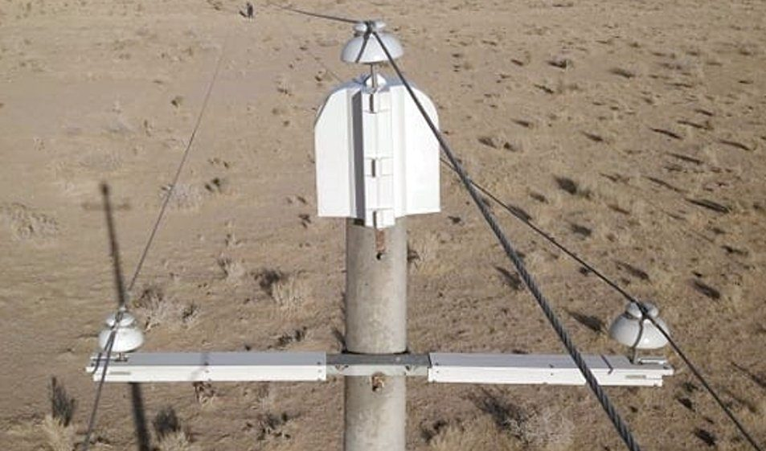
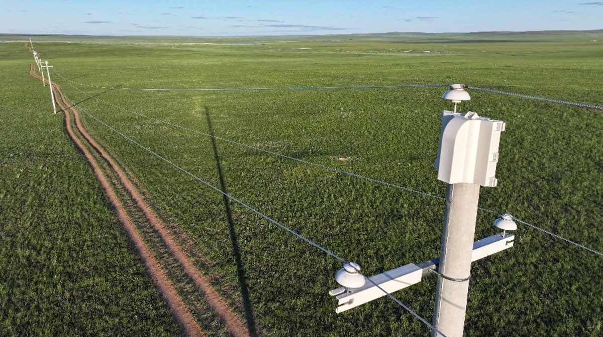
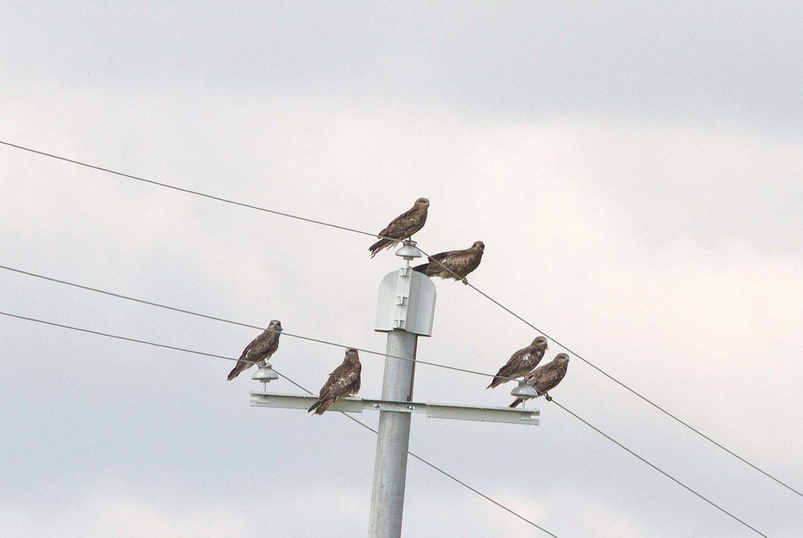
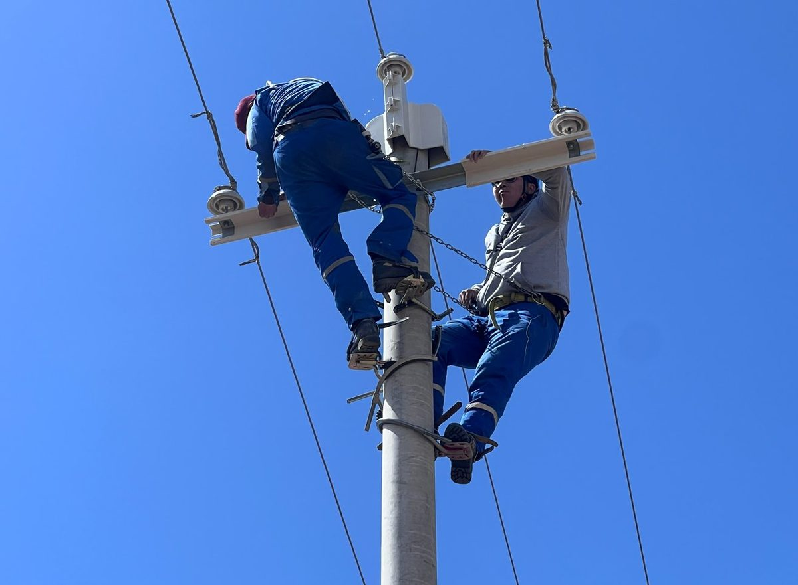
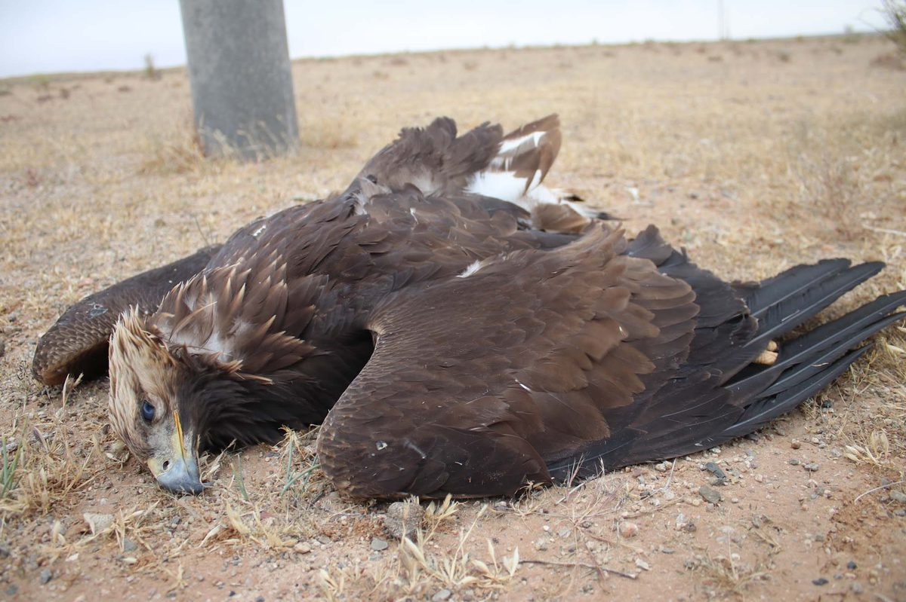
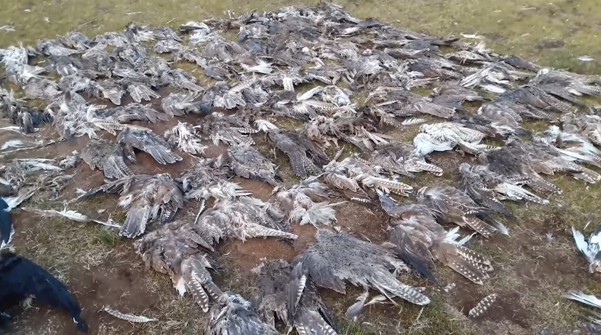
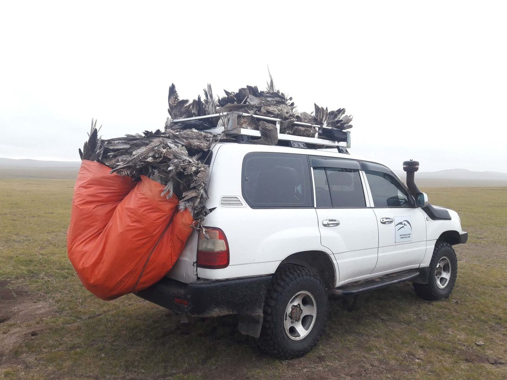

Үр дүнтэй, зардал хэмнэсэн шийдэл. Энэхүү вэбсайт нь шувуу хамгаалалд тулгамдсан асуудал болон шийдлийг танилцуулахаас гадна цахилгаан түгээх компаниуд болон хувийн хэвшил, шувуу судлаачдын хамтын ажиллагааны ололт, үр дүнг харуулна.
Асуудал
Өндөр хүчдэлийн 10–15 кВ-ын түгээх шугамын тулгуурууд нь цайрдсан ган хөндлөвч болон босоо шаазан хундага бүхий төмөр бетон шонгоос бүрддэг. Шувууд шонгийн газардуулагчтай төмөр дээр сууж цахилгаан гүйдэлтэй утсанд хүрвэл хүчдэлд цохиулдаг.
Хамгааллын төсөл хэрэгжихээс өмнө Монголд жилд 18,000 махчин шувуу хүчдэлд цохиулж эндэж байсан — үүнд дэлхий нийтэд устаж буй зүйл болох 4,000 гаруй идлэг шонхор багтана.
Монгол орны хээрийн бүсэд жижиг мэрэгчдийн нягтшил өндөр байх нь махчин шувуудыг олноор татаж, улмаар өндөр хүчдэлийн түгээх шугамын хүчдэлд цохиулан эндэх эрсдэлийг нэмэгдүүлдэг.
Цахилгаан гүйдэлтэй утас хооронд суусан шувуу тэр даруй хүчдэлд цохиулна.
Идлэг шонхор, Хээрийн бүргэд, Цармын бүргэд зэрэг нэн ховор зүйлүүд хамгийн их хохирч байна.
Энэ асуудал нь зөвхөн Монгол улсын хилээр хязгаарлагдахгүй. Хятадын Чинхай муж дахь идлэг шонхорын өвөлждөг гол бүс нутгуудад ч үхэл хорогдол их бүртгэгдсэн байна.
Шийдэл
Мохамед Бин Зайедын Махчин шувуу хамгаалах сан Монголд урт хугацаанд хийсэн хээрийн судалгаа, туршилтын ажлынхаа үр дүнд энэхүү тусгаарлагч бүрээсний загварыг боловсруулсан. Бүрээсийг цахилгаан гүйдэл дамжуулах утсанд биш харин тулгуур шонгийн орой болон хөндлөвчинд суурилуулдаг. Энэ бүрээс нь эвдэрч унасан ч цахилгаан хангамжинд ямар нэг эрсдэл үүсгэхгүй. Гүйдэл дамжуулах утсанд хүрэхгүй, тоос, мөс хураахгүй учир цахилгааны нэвчилт, салхины гэмтэл зэрэг кабелийн тусгаарлалттай холбоотой асуудлуудад сөрөг нөлөө үзүүлэхээс сэргийлнэ. Тусгаарлагч хундагнууд бүрэн нээлттэй хэвээр байдаг тул эрчим хүчнийхэн газраас хяналт шалгалт хийх боломжтой. Суурилуулалт нь энгийн хялбар бөгөөд хурдан байдаг нь цахилгаан эх үүсвэрийг тасалж суурилуулалт хийх хугацааг багасгах давуу тал болдог.
Хуванцраар төмөр бетон шонгийн орой болон бүх метал бүтцийг бүрдэг. Хос хуванцар загвар нь одоо байгаа тулгуурын тоног төхөөрөмжийг авахгүйгээр суурилуулдаг давуу талтай.
Ган хөндлөвчний дээд болон доод хэсгийг бүрсэнээр 2, 3-р фазыг хамгаалдаг. Тулгуурын ган хөндлөвч дээр шууд боолтоор боож бэхэлдэг.
Ялгаатай бүтэц бүхий анкер шонгуудад тусгайлан загварчлагдсан.
Судалгаа
Шувуу судлаачдаас бүрдсэн дөрвөн судалгааны баг 2023 оны 8-р сард төсөлд хамрагдсан 15 аймгийн хуванцар бүрээс бүхий 69 түгээх шугамын дагуу хамгааллын арга хэмжээний үр дүнг шалгаж хүчдэлд цохиулж эндсэн шувуудыг бүртгэв. Үр дүн нь маш сайн байв.
Төслийн эхний бүрээсийг 2019 оны 12-р сард суурилуулсан ба 6 жилийн дараа буюу 2026 оны 2-р сард шалгахад бүрээсэнд эвдрэл, гэмтэл бүртгэгдээгүй.
Монгол даяар хийсэн хээрийн судалгаа болон суурилуулалтын ажлын зургууд.









Төсөл, хөтөлбөр
МБЗМШХС-ийн санаачлагын хүрээнд (2019–2022) Монгол орны долоон бүсийн цахилгаан түгээх компанитай хамтран 15 аймгийн 69 түгээх шугамыг аюулгүй болгосон. Өнөөдрийн байдлаар Улаанбаатар Төмөр замтай хамтын ажиллагааны хүрээнд бусад шугамыг аюулгүй болгох ажил үргэлжилж байна.
Шугамын нэр болон хамгааллын төлвийг харахын тулд газрын зурган дээрх аль ч шугам дээр дарна уу.
7 бүсийн цахилгаан түгээх компанитай хамтран 15 аймгийн 69 өндөр эрсдэлтэй түгээх шугамыг аюулгүй болгосон.
УБ Төмөр зам болон шувуу хамгааллын байгууллагуудын хооронд хэрэгжиж буй жишиг хамтын ажиллагаа. Чойр дахь Улаанбаатар Төмөр зам нь МБЗМШХС болон МШХТ-тэй хамтран Говьсүмбэр аймаг дахь цахилгааны шугамаа аюулгүй болгосон. 1-р шугам (885 шон) бүрэн аюулгүй болсон. 2-р шугам (285 шон) 100% дууссан. Энэ нь эрчим хүчний байгууллага болон хэрэглэгч байгууллага хамтдаа бага зардлаар маш үр дүнтэй ажиллаж болохыг харуулж буй жишээ юм.
| Компани | Аюулгүй болгосон шугам | Аймаг |
|---|---|---|
| Баруун бүсийн эрчим хүчний систем (ББЭХС) | 17 | Баян-Өлгий болон бусад |
| Алтай-Улиастайн эрчим хүчний систем (АУЭХС) | 14 | Говь-Алтай болон бусад |
| Баянхонгор цахилгаан түгээх сүлжээ (БЦТС) | 9 | Баянхонгор |
| Өмнөд бүсийн цахилгаан түгээх сүлжээ (ӨБЦТС) | 4 | Өмнөговь болон бусад |
| Багануур-Зүүн өмнөд бүсийн цахилгаан түгээх сүлжээ (БЗӨБЦТС) | 13 | Дундговь болон бусад |
| Дорнод бүсийн эрчим хүчний систем (ЗБЭХС) | 11 | Дорнод болон бусад |
| Баян-Өлгий цахилгаан шугам сүлжээ (БӨЦШС) | — | Баян-Өлгий |
| Нийт | 69 | 15 аймаг |
Хэрхэн хамгаалах
Монгол Улсын MNS 6518:2015 стандартын шаардлага дагуу өндөр хүчдэлийн түгээх шугамаа аюулгүй болгох энгийн, зардал хэмнэсэн, үр дүнтэй шийдэл. Хэрхэн эхлэх вэ?
Стандарт бетон шон болон төмөр хөндлөвчтэй 6кВ, 10кВ, 15кВ-ын түгээх шугамууд өндөр эрсдэлтэй. МШХТ / МБЗМШХС тухайн түгээх шугамд эрсдэлийн үнэлгээ хийж, мэдээллээр хангана.
Нийт шонгийн тоо, төрөл, шаазан хундагны тоо зэргийг бүртгэнэ. Худалдан авалтаас өмнө шаардлагатай тусгаарлагч бүрээсний тоо хэмжээг тогтооно.
Бүрээсийг МШХТ / МБЗМШХС-аар дамжуулан худалдан авч болно. Тэдгээр нь MNS 6518:2015 шаардлагыг бүрэн хангана. МБЗМШХС нь шувуу хамгаалах ажилд шаардлагатай хамтын санхүүжилтэд туслалцаа үзүүлэх боломжтой. Нийлүүлэгчийн мэдээлэл болон техникийн үзүүлэлтийн талаар МШХТ-тэй холбогдож авна.
Суурилуулалт нь аюулгүй ажиллагааны шаардлагаар цахилгаан салгахыг шаарддаг.
Үхэл хорогдлыг бууруулах үр дүнгийн судалгаа, MNS 6518:2015 шаардлагыг хангасан байх.
Хөтөлбөрийн удирдлага, тусгаарлагч бүрээсний загвар, тоног төхөөрөмж үйлдвэрлэл, олон улсын санхүүжилт, судалгааны зохицуулалт, стратегийн дэмжлэг
Хээрийн судалгаа, өгөгдлийн менежмент, орон нутгийн харилцаа, оролцогч талуудтай харилцах болон Монгол дахь төслийн хэрэгжилт
302 тоот, ЖиБи Төв, Бага тойруу 36/2
Сүхбаатар дүүрэг, 8-р хороо
Улаанбаатар 14192, Монгол Улс